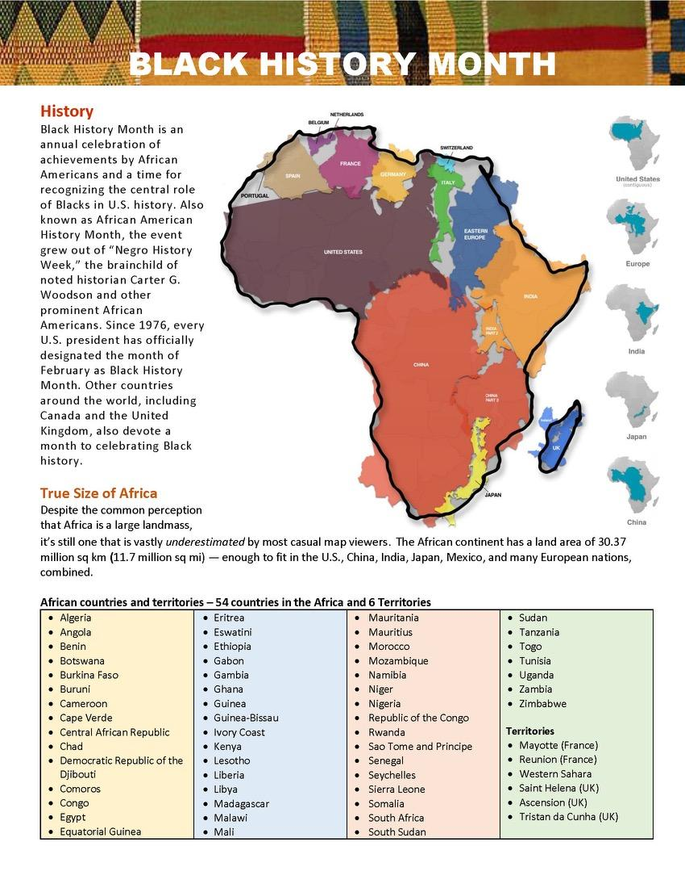

Resources & Further Reading
How Racism Makes us Sick
David R. WilliamsShould Blacks Collect Racist Memorabilia?
Henry Louis Gates, Jr. writes an article exploring the nuance and morality of Blacks collecting racist memorabilia.
Read at PBSThe Trials of Critical Race Theory
The CBS Reports' Reverb series examines the backlash to the so-called critical race theory in schools and the iompact on students and teachers.
Watch on CBSRedlining: Mapping Inequality
A local story detailing the impact of redlining in the suburbs of Dayton, Ohio.
Watcg on PBS5 Big Stories about Race to Watch for in '24
A CNN report that appeared in CNN's "Race Deconstructed" Newsletter.
Watch on CNNFast Facts about Africa
